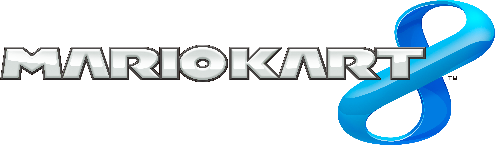
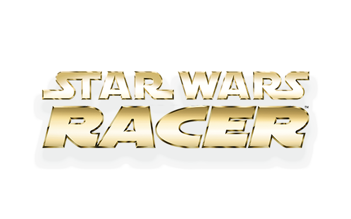
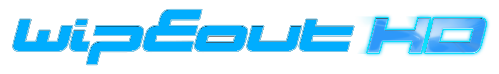
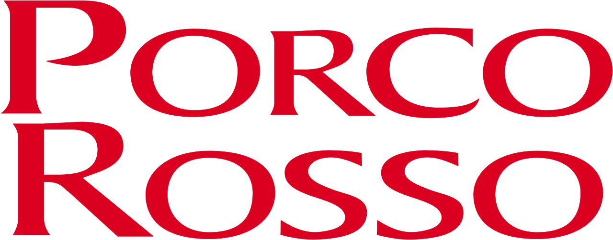
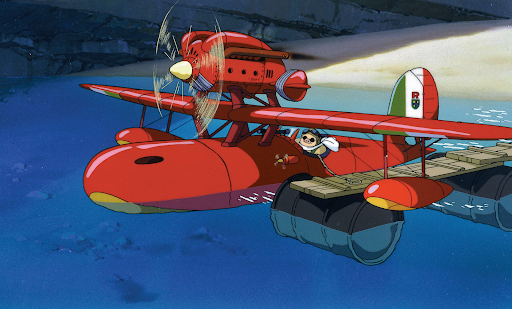
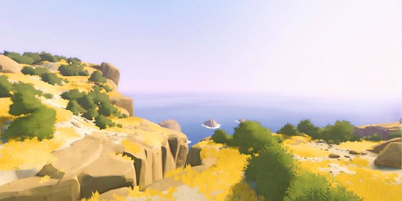
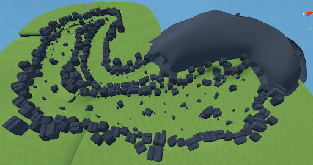
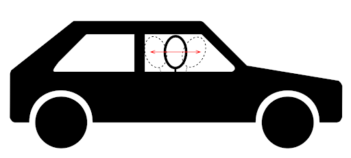
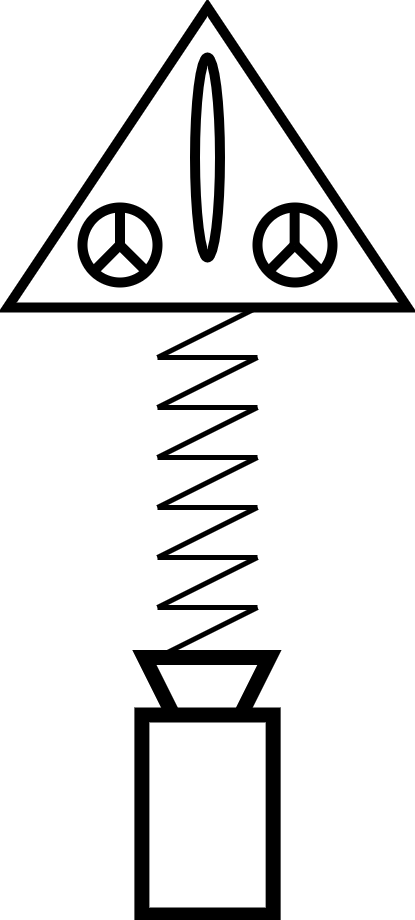

Context
This project was developed at the SAE Institute of Geneva during my third year of bachelor in Games Programming. The objectives were to create a game on a custom Game engine in C++ that would run on the Nintendo Switch.
Team
For the project, we were 4 main members who worked on the project from start to end:
- Sebastien Feser: Lead Project, Lead Gameplay Programmer, Lead Designer
- Luca Floreau: Producer, Lead Programmer, Gameplay Programmer
- Simon Canas: Lead Engine Programmer, Lead Tool Programmer
- Stephen Grosjean: DevOps, Gameplay Programmer, Game Designer
The entire team counted 25 people working on the project:
- 10 Game Artists
- 2 Audio Engineers
- 13 Programmers
Constraints
Technical constraints given by our teacher:
- Use the Neko engine (custom game engine developed by our teacher and ourselves)
- Develop a game for the Nintendo Switch
Gameplay constraints:
- Develop a racing game
- Develop a local multiplayer game
Project Overview
Our project "AerRacers" is a multiplayer pod racing game where the player can go very fast but has to be careful about obstacles. The player has to manage speed - the ship's movements are directly controlled by the joycons joysticks, each stick moving a rotor from the spaceship.
Organization
We had 5 months to develop this project (September 17th 2020 - May 07th 2021). Every week, we held meetings to track everyone's progress:
- Wednesday: Meeting with the 4 main team members
- Thursday: Meeting with our teacher Elias Fahran
Lead Project Role
As Lead Project, I had to communicate with every team member and manage the leads. I was also responsible for communication with external members. At the beginning, we accumulated delays because members met problems with their tasks. To catch up, we reorganized our planning in December and cut some features. After that, we managed to meet our deadlines.
Lead Designer Role
Gameplay References


We were inspired by Mario Kart 8 for the simple UI and level design.


Our main reference. We got inspired by the speed and open levels.


We got inspired by the smooth camera and vehicle reactions.
Art References


We got inspired by the Porco Rosso ships with a 1930s look.


Inspired us for the low poly look and colorful environments.
Concept
We decided to develop our game around these basic rules:
- Pod racing multiplayer game
- Ships move fast
- Movements with the joycon's sticks
We thought about mechanics like destructible ships, boosts, and health bars, but only kept local multiplayer due to development delays.
Level Design

We worked on level design using Unity Engine with two different scenes: a Playground for testing 3Cs and a Level Design scene for the final level.
Lead Gameplay Programmer Role
The gameplay development was split into two parts:
- 3C and Level Design using Unity
- Game features & exportation of Unity code to Neko Engine
Camera Development
To make a fun camera, I had the idea to make it behave like a driver in a car. If the ship accelerates, the camera would lag behind. I imagined a spring system linking the ship and camera. The development of this system took more than 2 months due to glitching issues. In the end, we used a simpler SmoothDamp function.


Development in Neko
After Unity development, I worked on the Neko Engine to implement missing features. Stephen worked on Unity code implementation and Audio, while I worked on menu and game management and the waypoint system.
Related Blog Posts
Conclusion
Soft Skills Learned
I learned about my strengths and weaknesses. I have strong logic skills - it's not hard for me to create working code when I know what I'm doing. I also learned that I preferred working on systems instead of gameplay features. The quarantine due to COVID-19 had a huge impact on my motivation and working efficiency.
Work Skills
A skill I missed was knowledge in maths that could help solve simple problems. I learned that I still have a lot of work to do to be a better programmer. It's also very important to organize code well and be more curious about others' code.
Key Lessons
- Define game design and concept as fast as possible, especially the MVP
- Iterate on gameplay frequently and create tests often
- Don't stay too long on one task - ask for help early
- Be curious about colleagues' code to understand it better
- Ask precise questions when blocked - a 3-day problem might be solved in 10 minutes by a teammate